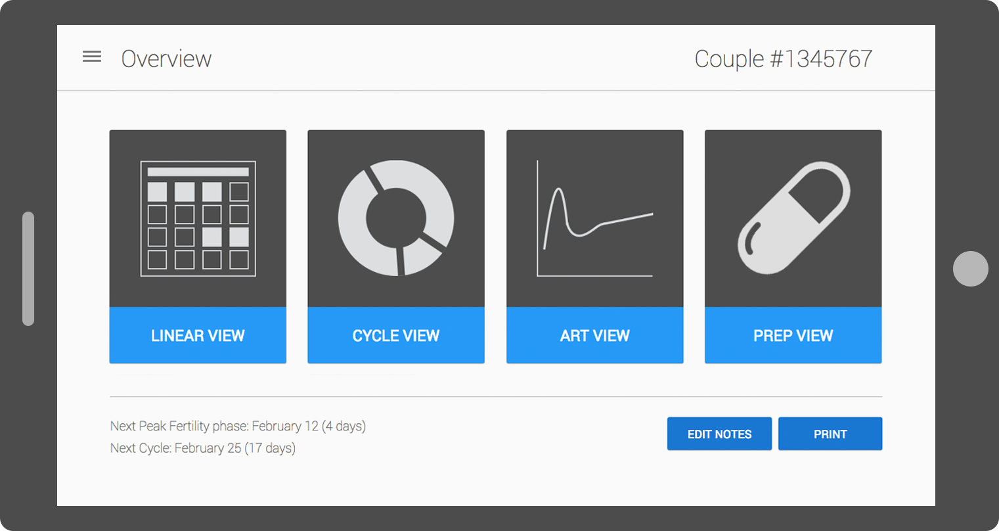

Project Summary
In a small team, we created a tablet app prototype for clinicians to use to help serodiscordant couples (one partner living with HIV) safely conceive children. The prototype focused on displaying the couples data visually while also being an education tool about the woman's fertility cycle and the viral load of the partner living with HIV. The goal of the project was to build a fully interactive prototype that could be used on site in Kenya and Uganda during usability test with clinicians.
Problem Space
Many serodiscordant couples in Kenya and Uganda want to have children, but unfortunately the clinicians struggle with informing the couples about when it is safest to conceive.
How might we develop an app to better support the clinicians goals of providing the tools and education about the safest times to conceive.
Process
We started our project by researching and learning about the fertility cycle and treatment of HIV by reading relevant literature, interviewing clinicians, and viewing presentations about how the clinics operate. Next, we completed a comparative analysis of apps currently on the market to track both fertility and medication.
After researching we began sketching and paper prototyping solutions. After many iterations we built and iterated an Axure prototype. Throughout the prototyping process we ran small feedback sessions and usability students to ensure it was ready for use and feedback generation in Africa
Results
Our app was successfully brought to Africa and we were able to get valuable usability feedback, the app was then brought to development.
We also published a peer-reviewed paper for the 2015 Wireless Health conference, titled "Prototype Development for a Clinic-Based Mobile Health Tablet Application for Kenyan HIV-1 Serodiscordant Couples Using Safer Conception Strategies".
Title
Safer Conception
Date
Jan 2015 - Mar 2015
Links
Tasks
- User Research
- Competitive Analysis
- Prototyping
Tools
- Axure
- Beanstalk